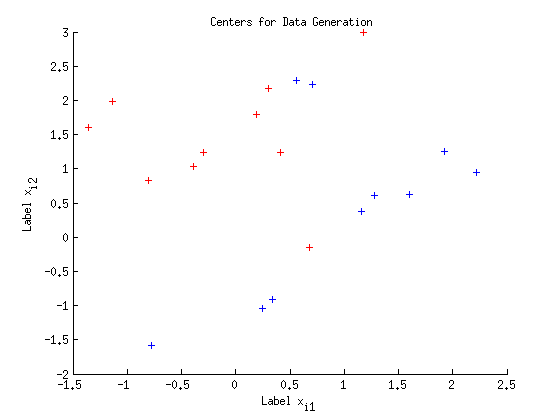
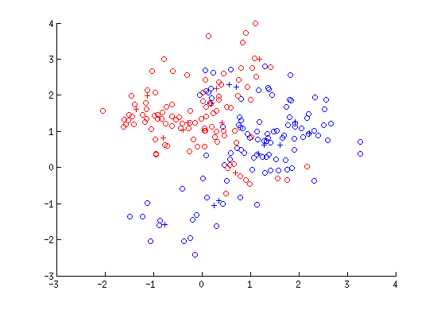
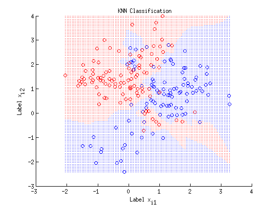

Lesson 3: Classification: K-nearest neighbor method (KNN)
Author: Erhu Du
Supervisor: Neal Davis
University of Illinois at Urbana-Champaign
Fall 2015
Contents
Training data generation
clear all; clc; % generating 10 center points csize=10; % creat 10 center points for each group p=2; % dimension of point x s=1; % standard deviation for points from center m1 = [normrnd(0, s, [csize 1])+1 normrnd(0, s, [csize 1])+0]; % blue points center m0 = [normrnd(0, s, [csize 1])+0 normrnd(0, s, [csize 1])+1]; % red points center % generating training points n=100; % number of training points for each group id1=datasample(1:csize,n,'Replace',true); id0=datasample(1:csize,n,'Replace',true); s=sqrt(1/5); % standard deviation for generating x for i=1:n traindata_blue(i,:) = normrnd(m1(id1(i),:), s); traindata_red(i,:) = normrnd(m0(id0(i),:), s); end; traindata = [traindata_blue; traindata_red]; y= [repmat(0,[n 1]); repmat(1,[n 1])]; % blue points' y is 0; while reds' are 1 Y_train = y;
Binary data visualization
figure(1) scatter(m1(:,1), m1(:,2),'b','+'); hold on; scatter(m0(:,1), m0(:,2),'r','+'); hold on; xlabel('Label x_i_1') ylabel('Label x_i_2') title('{\bf Centers for Data Generation}'); figure(2) scatter(m1(:,1), m1(:,2),'b','+'); hold on; scatter(m0(:,1), m0(:,2),'r','+'); hold on; scatter(traindata_blue(:,1), traindata_blue(:,2),'b', 'o' ); hold on; scatter(traindata_red(:,1), traindata_red(:,2),'r', 'o' ); hold on; 
Test data generation
N=5000; id1=datasample(1:csize,N); id0=datasample(1:csize,N); for i=1:N testdata_blue(i,:) = normrnd(m1(id1(i),:), s); testdata_red(i,:) = normrnd(m0(id0(i),:), s); end; testdata = [testdata_blue; testdata_red]; Y_test = [repmat(0,[N 1]); repmat(1,[N 1])]; % blue points' y is 0; while reds' are 1
Apply KNN approach for binary data classification
myk=[1 3 5 7 11 21 31 45 69 101 151]; myk=sort(myk, 'descend'); m=length(myk); cv_err = repmat(0,[1 m]); id = datasample(1:2*n,2*n,'Replace',false); fold = 0:40:200; Ytrain=y; for i=1:5 for j= 1:m ith = id((fold(i)+1):fold(i+1)); % rows in the i-th fold; op_ith = setdiff(id, ith); % rows that are in the id, but not in ith tmp = knnclassify(traindata(ith,:), traindata(op_ith,:), Ytrain(op_ith,:), myk(j)); % knn classify cv_err(j)=cv_err(j)+sum(tmp ~= Ytrain(ith)); % calculate errors for each k end; end; [min_value min_ind] = min(cv_err); k_star = myk(min_ind); Ytest_pred = knnclassify(testdata, traindata, Y_train, k_star); test_err = sum(Y_test ~= Ytest_pred)/(2*N); figure(3) h1 = gscatter(traindata(:,1), traindata(:,2), Y_train, 'br', 'o', [], 'off'); % legend('Blue Training Data','Red Training Data','Location','NW') hold on; [X,Y] = meshgrid(linspace(min(traindata(:,1)),max(traindata(:,1))),... linspace(min(traindata(:,2)),max(traindata(:,2)))); X = X(:); Y = Y(:); C = knnclassify([X Y],traindata,Y_train, k_star); gscatter(X,Y,C,'br','.',3,'off'); xlabel('Label x_i_1') ylabel('Label x_i_2') title('{\bf KNN Classification}');